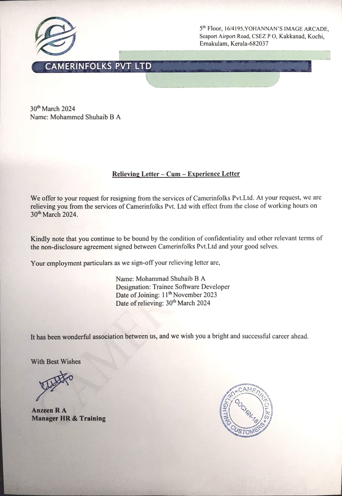
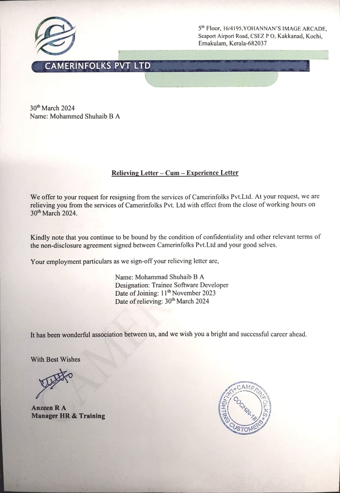

ABOUT ME
MOHAMMAD SHUHAIB B A
My name is Mohammad Shuhaib B A.I am a 2023 graduate with a Bachelor’s degree in Computer Science and Engineering from Visvesvaraya technological University. My academic background, internship experiences, and passion for problem-solving make me eager to contribute to your team.
During my studies, I gained a strong foundation in software development, data analysis, and web technologies. I am proficient in programming languages such as Java, JavaScript, CSS, HTML, MySql and have hands-on experience with frameworks like Spring Boot and also I am proficient in buisness tools like Excel, Tableau, R Programming. I have used tools like Eclipse IDE, Visual Studio,Tableau Public and Excel. I am proficient in languages like English, Malayalam, Hindi. My final year project, Bearys Online Exchange which is an android based mobile application, involved developing a fully functional E-commerce application by using android studio and Java as a coding tool and we implemented user authentication and it is mainly for college students to sell, exchange, buy, rent their used products, which further honed my skills in collaborative teamwork.
Additionally, my recent internship at Camerinfolks Pvt Ltd, Kochi allowed me to create a java enterprise development in which I have developed a login and user registration by using jsp and JDBC, enhancing my technical expertise and understanding of real-world project workflows. This experience, combined with my coursework, has equipped me to tackle challenges in software development and technical support roles effectively. Beyond technical skills, I take pride in my ability to adapt quickly, communicate effectively, and approach complex problems analytically.
I am excited about the opportunity to contribute to your team and grow as a professional under your mentorship. Enclosed is my resume, which provides additional details about my qualifications. I would be grateful for the opportunity to discuss how my skills and aspirations align with your company goals.
Thank you for considering my application. I look forward to the possibility of contributing to your team.
 
